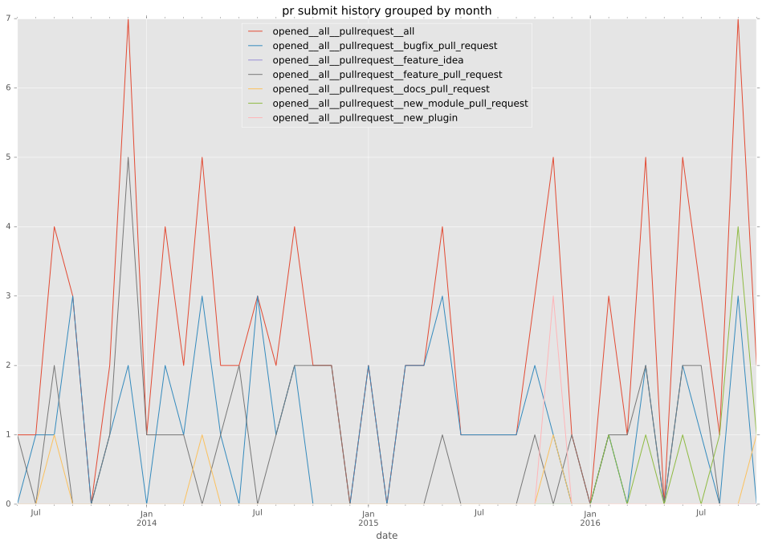
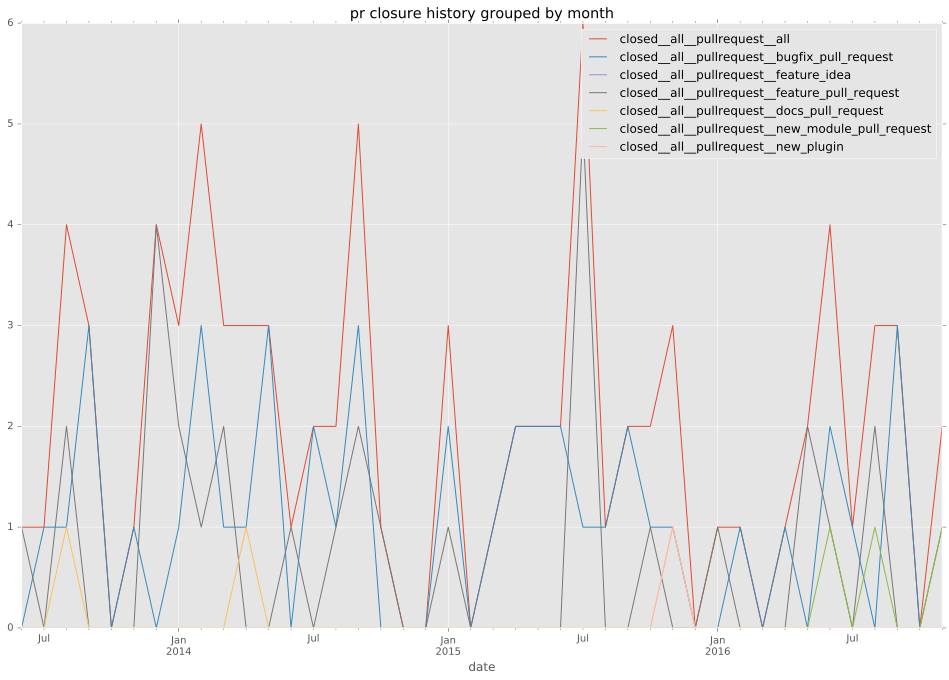
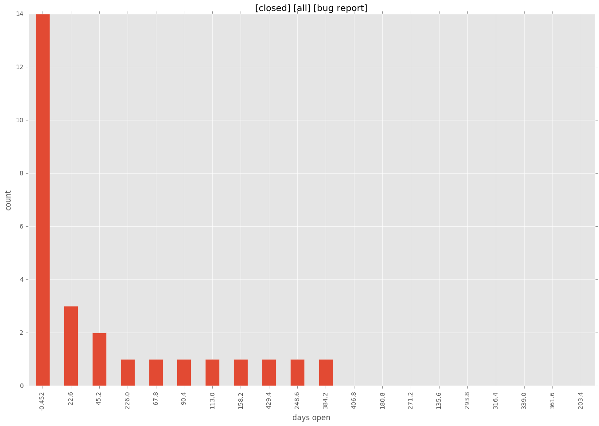
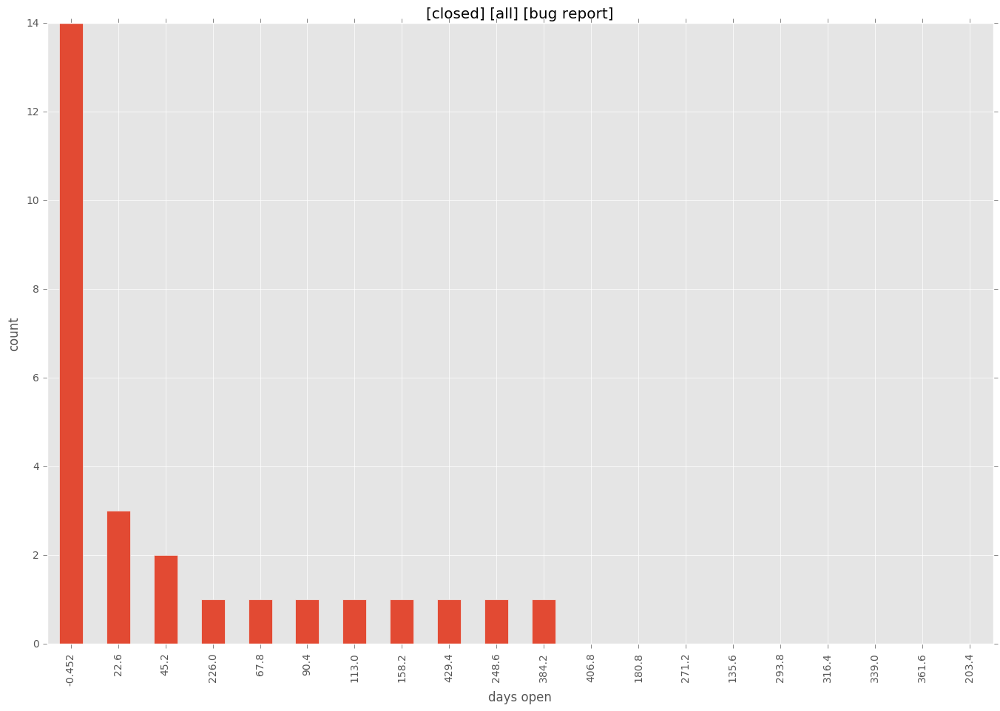

authors
- bpennypacker
- willthames
maintainers
- bpennypacker
- willthames
contributors
- willthames : 141 commits
- bpennypacker : 109 commits
- Hypermanzer : 36 commits
- bcoca : 30 commits
- mpdehaan : 19 commits
- herbygillot : 15 commits
- tima : 9 commits
- davidfischer-ch : 4 commits
- DenverJ : 4 commits
- wimnat : 3 commits
- steenzout : 3 commits
- mohangk : 3 commits
- maxrothman : 3 commits
- jctanner : 2 commits
- slimandslam : 1 commits
- shawnsilva : 1 commits
- michaelmoussa : 1 commits
- jder : 1 commits
- gundalow : 1 commits
- follower : 1 commits
- flyte : 1 commits
- bracki : 1 commits
- adrianmoisey : 1 commits
- abadger : 1 commits
total issue counts
feature pull request: 25
docs report: 3
pullrequest: 72
docs pull request: 5
bugfix pull request: 40
feature idea: 10
issue: 47
new plugin: 1
bug report: 35
issue history

pullrequest history


days open by issue type
bugfix pull request
count: 62
std: 21.0026124637
min: 0
max: 121
median: 2.5
mean: 9.85483870968
all
count: 139
std: 74.4979246544
min: 0
max: 452
median: 5.0
mean: 35.1510791367
pullrequest
count: 0
std: nan
min: nan
max: nan
median: nan
mean: nan
docs pull request
count: 7
std: 1.11269728053
min: 0
max: 3
median: 0.0
mean: 0.714285714286
docs report
count: 3
std: 4.04145188433
min: 28
max: 35
median: 28.0
mean: 30.3333333333
feature pull request
count: 36
std: 77.12272224
min: 0
max: 284
median: 17.0
mean: 49.5
feature idea
count: 3
std: 86.0871651293
min: 12
max: 181
median: 125.0
mean: 106.0
issue
count: 0
std: nan
min: nan
max: nan
median: nan
mean: nan
new plugin
count: 1
std: nan
min: 11
max: 11
median: 11.0
mean: 11.0
bug report
count: 27
std: 123.798303474
min: 0
max: 452
median: 16.0
mean: 76.5925925926
closures grouped by total days open
 
